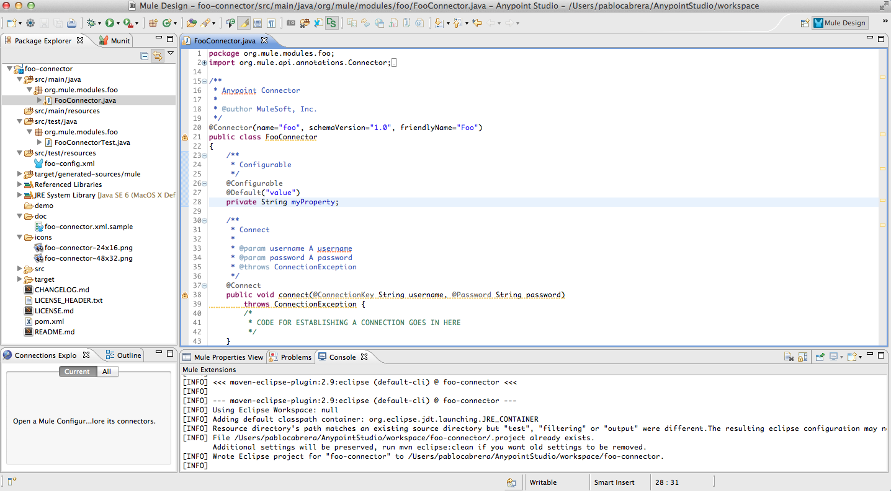

Creating a Java SDK-Based Connector
To build your own Anypoint Connector for Studio, you can use the Anypoint Connector DevKit. In Anypoint Studio, you can add an extension module that enables you to use Anypoint Connector DevKit.
Creating a New Java SDK-Based Connector Project
Note: To import an existing connector project, see Importing an Existing Connector Project.
-
Click File > New, then select Anypoint Connector Project:

Create an Anypoint Connector Project:
Field Entry Connector Name
Define a unique name for your Anypoint connector project.
Project Name
Connector project name.
Namespace
Connector project namespace.
Location
Connector project location.
API:
Type
Select the way your connector can access a resource with the Type field:
-
Java SDK. See Creating a Connector Using a Java SDK:

-
SOAP. See Creating a SOAP Connector.
Authentication
Click an authentication choice for how your connector accesses its resource: Connection Management, OAuth V1, or OAuth V2.
DataSense:
Add DataSense methods
Provides methods to display metadata on the resource’s entities. For more information, see Adding DataSense.
Add DataSense Query Method
Adds method for the DataSense Query Language. For more information, see Adding DataSense Query Language.
-
-
Click Next, then enter values in the fields of the final screen of the wizard according to table below. The default values might apply without needing any changes.
Field Description Maven Settings
Click Manually set values, if needed, to change the Maven Group ID, Artifact ID, or the version of the connector.
GitHub Settings
Click Add GitHub information , if needed, to link your project to a new or existing GitHub repository.
-
Click Next and choose how the connector’s icon appears in Anypoint Studio when users build projects using your connector:
-
Click Finish. This generates a project containing the structure with all the required elements such as images, sample docs, and some basic tests for your connector. Refer to the DevKit documentation to build upon this initial, basic structure in Installing and Testing Your Connector in Studio.

More DevKit Actions
The plugin also provides actions in the tool bar:

The same actions can be accessed by right-clicking your project in the package explorer:
Actions that are enabled when selecting the root of a DevKit project:
Generate Tests |
Generates Functional tests cases for your connector processors. |
Install Or Update |
Installs or updates the connector in Anypoint Studio and in your local repository. |
Preview Documentation |
Generates Javadoc for your connector, making use of the samples included in the sample doc file. |
Generate Sources |
Generate the sources, schemas, editors and everything required to integrate with Mule and Anypoint Studio. This can be useful if you want to debug the behavior of your connector in a Mule app. |
Enable / Disable Javadoc check |
Before releasing a connector, check that your Javadocs are in order. By enabling this flag, when attempting to build, you see all the processors that are missing Javadoc comments or samples. |
Using Your Connector
You can copy your connector into Anypoint Studio by right-clicking your project and selecting Anypoint Connector > Install or Update. To easily find it in the palette, type the name in the search box:
Previewing Documentation
When you build a connector, DevKit automatically creates an HTML file that serves as a user-friendly reference for the Javadoc annotations that you have added within your code. You can preview the contents of this file without having to build the entire project. This is equivalent to running the following command from a terminal in the project folder:
mvn clean package -DskipTests javadoc:javadocGenerating Sources
You can instruct DevKit to build your connector and generate both a .zip file and a .jar file in your project’s /target folder. Use these files to test, or use the connector in your instance of Studio or another separate instance of Studio. To generate the sources, right-click your project in the Package Explorer, then select Anypoint Connector >Generate Sources. This is equivalent to running the following command from the command console from within the project folder:
mvn clean package -DskipTests -Ddevkit.studio.package.skip=true -Ddevkit.javadoc.check.skip=true -Dmaven.javadoc.skip=trueDisabling the Javadoc Check
DevKit enforces the requirement that you provide Javadoc documentation for every callable method in your connector. For the sake of testing a work-in-progress project, however, you may want to disable the Javadoc Check to postpone documentation until the project is complete and ready for testing.
mvn clean package -Ddevkit.javadoc.check.skip=trueAdding Samples
To navigate to a sample, click a sample link while holding the command key pressed. If a sample exists, the sample editor opens the processor’s sample.
If you enable the Javadoc check, quickfix helps you add the missing samples, which you can trigger by typing control + space.

This is what a sample looks like, which is an XML file. There are a few simple templates you can use within them:
Understanding the Generated Connector
Your Connector basically consists of a set of operations and configurable elements users populate in order to consume the API your connector was developed for.
Configurables
A configurable field in your connector looks like this in the DevKit view:

Users can configure its fields in Studio when adding a configuration global element for the connector.
After you install your connector by right-clicking the connector and clicking Anypoint Connector > Install or Update, completing the prompts, and restarting Studio, users can create Mule Projects and use your connector. The steps that follow describe how a user can configure your connector per the Configurable section of your connector.
To configure:
-
Drag an instance of your connector to the canvas
-
Double-click the connector to open its properties editor
-
Click the green plus sign next to the Connector Configuration field:
-
Set a value for the field. The default value you configure in the connector is presented as the initial value in the connector’s configuration field My Property:
Processors
When users configure a Mule Project created from a connector, the Operation field options correspond to the @Processor code in the connector. In the top view of the illustration, the Demo connector has as its Operation, My Processor. The lower part of the illustration shows the processor values in the connector.
In this example, a single string was configured as an input in the method for this processor. "String" displays as an input field once the operation is selected:
See Also
-
NEXT: Continue to Choose and Implement your Authentication method for your API.
-
Learn more about the Connector Project structure.